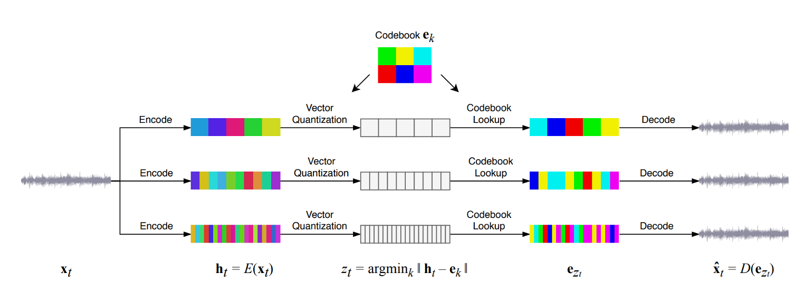
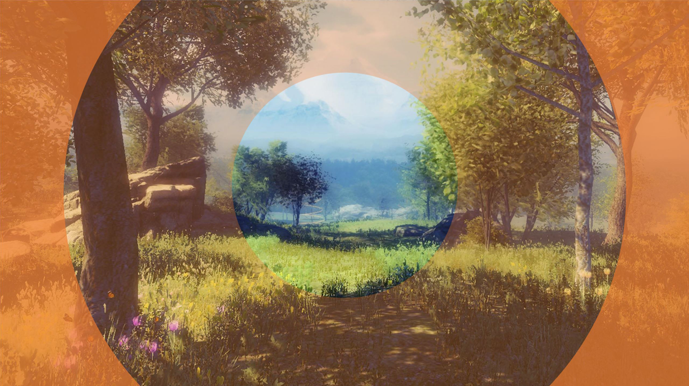

Applied Researcher & Engineer. My research interests lie at the intersection of spatial computing, digital fabrication, and intelligent interactive systems, with a focus on empowering and augmenting unique human abilities using an applied, systems-focused, and interdisciplinary approach. Expert in XR Software Engineering, and building research prototypes for industrial scale, with experience at Siemens, Audi, and Silicon Valley startups.
Interactive Digital Twin for Metal 3D printers enabling in-situ anomaly visualization and CAD overlays.
A VR sketching application using 6DoF-tracked pen and tablet devices, combining mid-air and surface sketching.
Fusing digital and physical spaces using 3D Generative AI for intent-aware spatial interactions.
Multi-hand interaction in XR supporting various mappings, hand-recording, and spatial placements.

AI Research tool for Spotify analysis and generation of music using OpenAI Jukebox.

Eye-tracked filtering of blue light in VR to improve user well-being without perceptual notice.
Algorithmically generating timber frame constructions for Tiny House concepts in XR.
3D Content Authoring in VR